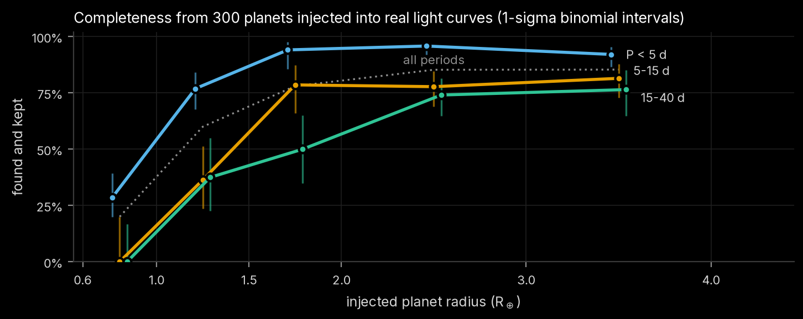
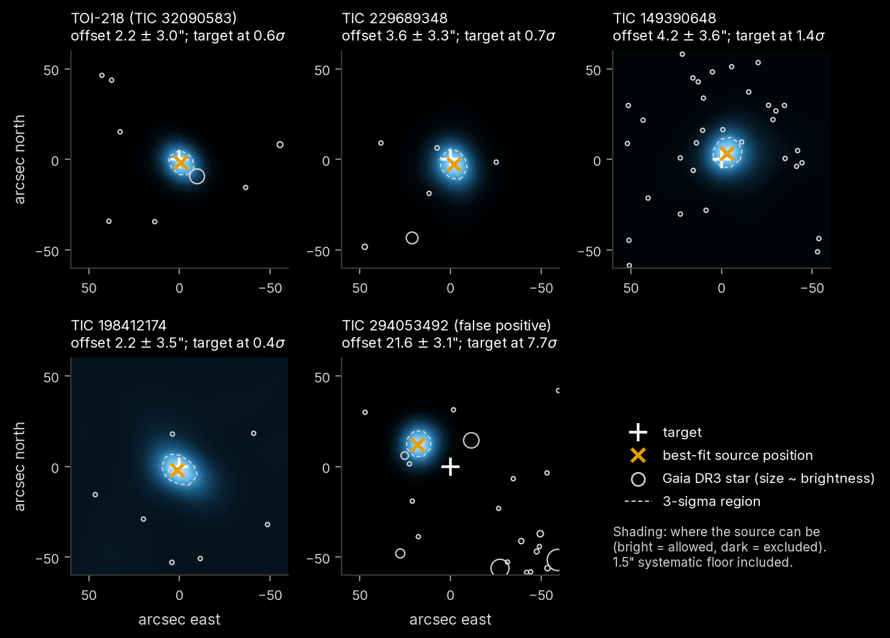
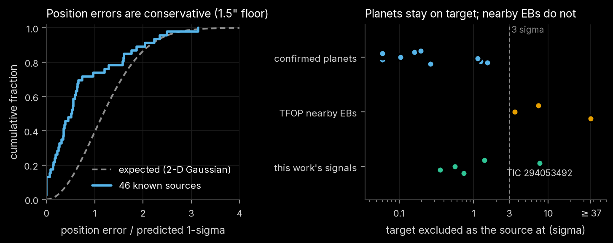
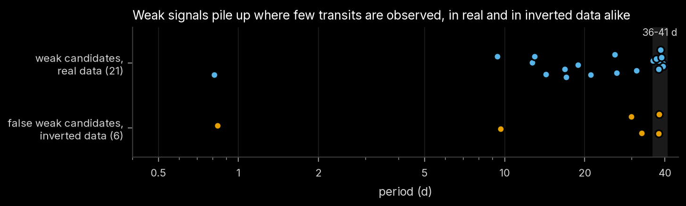

Four Earth-sized planet candidates from a deep search of the longest-observed TESS M dwarfs
A transit search of the 1,279 M dwarfs NASA's TESS has observed the longest, with every candidate checked in the light curve, in the pixels, statistically, and against NASA's own pipeline.
Overview
M dwarfs near the TESS continuous viewing zones now have years of 2-minute photometry, enough to reach Earth-sized planets. This work searched the 1,279 M dwarfs with at least 20 sectors of SPOC light curves through Sector 107 and found four Earth-sized transit candidates that appear in no planet or candidate catalogue: a third signal in the TOI-218 system and three signals NASA's pipeline had flagged but never promoted, including an 11.2-hour orbit around TIC 229689348.
Each candidate was then tested beyond the light curve. A new pixel-level localization, validated on confirmed planets, known nearby eclipsing binaries and eclipses planted in the real images, places all four on their target stars and shows that a fifth first-pass candidate is an eclipsing binary 22″ away. With the neighbours the pixels exclude treated as cleared, all four meet the TRICERATOPS likely planet criteria, and TOI-218's new signal, the only one with existing high-resolution imaging, also falls below the validation thresholds. None is yet confirmed; the remaining questions are exactly what ground-based photometry and high-resolution imaging answer.
M dwarfs searched, with 20 to 44 sectors of 2-minute data each
periodic signals detected and vetted
confirmed transiting planets in range recovered
Earth-sized candidates in no planet or candidate catalogue
Candidates
four signals, one false positive
| Target | Period | Radius (R⊕) | Teq | Source offset | FPP | Status before this work |
|---|---|---|---|---|---|---|
| TOI-218 · TIC 32090583 | 2.1468 d | 1.05 ± 0.06 | 578 K | 2.2 ± 3.0″ | 0.09 | new signal |
| TIC 229689348 | 0.4654 d (11.2 h) | 1.25 ± 0.08 | 1131 K | 3.6 ± 3.3″ | 0.20 | NASA TCE |
| TIC 198412174 | 1.3902 d | 1.35 ± 0.11 | 954 K | 2.2 ± 3.5″ | 0.48 | NASA TCE |
| TIC 149390648 | 2.8369 d | 1.00 ± 0.07 | 581 K | 4.2 ± 3.6″ | 0.09 | NASA TCE |
| TIC 294053492 | 1.0853 d | – | – | 21.6 ± 3.1″ | – | eclipsing binary |
Source offset: where the light goes missing relative to the target, from the joint pixel-level fit (1.5″ systematic floor included). FPP: TRICERATOPS false-positive probability with the neighbours the pixels exclude treated as cleared, before high-resolution imaging (TOI-218 with its existing imaging: FPP = 1.4 × 10⁻⁵). NASA TCE: flagged by NASA's SPOC pipeline as a Threshold Crossing Event but never promoted to a TESS Object of Interest.
TOI-218, third signalstrongest
P 2.1468 d · Rp 1.05 ± 0.06 R⊕ · Teq 578 K · FPP 0.088
- A third periodic signal beside TOI-218.01 and .02, in 437 transits and in both halves of the data.
- TOI-218 has an equal-brightness wide-binary companion 13.5″ away; the pixels place all three signals on TOI-218 and exclude the companion at 4.4σ for the new one.
- With the existing Gemini speckle imaging, FPP = 1.4 × 10⁻⁵, below TRICERATOPS's validation thresholds.
- Open: flaring host; no ground-based light curve has yet seen the transit.
TIC 22968934811.2-hour orbit
P 0.4654 d · Rp 1.25 ± 0.08 R⊕ · Teq 1131 K · FPP 0.197
- Flat-bottomed, 1,088 transits; flagged three times by NASA's pipeline but never promoted.
- NASA's 55″ source offset came from difference images that failed its own quality metric; the joint localization puts the source on the target (3.6 ± 3.3″).
- Open: unresolved bound companions, which imaging would test.
TIC 149390648
P 2.8369 d · Rp 1.00 ± 0.07 R⊕ · Teq 581 K · FPP 0.088
- Earth-sized; on target in a crowded field, in agreement with NASA's own offset.
- NFPP 0.00093 once the 15 neighbours the pixels exclude are cleared.
- Open: the first half of the data alone does not lock onto the period.
TIC 198412174host ambiguous
P 1.3902 d · Rp 1.35 ± 0.11 R⊕ · Teq 954 K · FPP 0.478
- Near-grazing (b ≈ 0.93); on or near the target.
- A T = 18.2 star 5.3″ away is below the localization's resolution, and TRICERATOPS weighs a planet on an unseen companion (46%) about equally with the target (45%).
- Open: needs adaptive-optics or speckle imaging.
Search and vetting
Light curves are cleaned of flares, detrended with a robust biweight filter, and searched from 0.4 to 40 days. Because eight years of data with year-long gaps would need a prohibitively fine coherent period grid, box least squares runs on each observing season separately and the seasons' likelihoods are added: a real planet adds up in every season, noise does not. Eighteen tests then look for eclipsing binaries, contamination, artefacts and stellar variability, with noise measured at the transit's own timescale.

The pipeline recovers 25 of 26 confirmed transiting planets around these stars, keeps 74% of 300 planets injected into the real light curves (89% of 2–4 R⊕ planets inside 15 days), and produces no false candidates from 200 light curves turned upside down.

Where the light goes missing
pixel-level localizationTESS pixels are 21″ wide, so an eclipsing binary a few pixels away can leak a planet-sized dip into the target's light curve. For every sector the images taken during transit are subtracted from those just before and after, and all sectors are fitted together with NASA's pixel response function, calibrated per sector on Gaia stars, to find where the light disappeared. Per-pixel errors come from fake transits at random times; position errors include a 1.5″ floor measured on 46 sources of known position.

The method was validated before it was trusted: all 11 confirmed planets tested come out on their own star, all 3 signals the TESS Follow-up Observing Program had traced to nearby eclipsing binaries come out off target, and 34 of 35 reliable synthetic eclipses planted in the real pixels are traced to the correct star.

What NASA's pipeline saw
Three candidates were SPOC Threshold Crossing Events that never became TOIs. Their reported SNR fell as data accumulated. Folding this work's light curves at each SPOC period reproduces the drop: a period error of a few 10−5 d smears a sub-hour transit by hours over a 2,000-day baseline. The signals did not fade.

How likely is each alternative?
statistical validationTRICERATOPS weighs a planet on the target against eclipsing binaries, unresolved companions, background stars and resolved neighbours. It has no pixel information, so it is run twice: on TESS photometry alone, and with the neighbours the localization excludes treated as cleared. For TOI-218 this removes the twin companion as a host and lowers the FPP from 0.41 to 0.09. What remains for every candidate is unresolved bound companions, which high-resolution imaging tests directly. TOI-218 already has such imaging: Gemini-South speckle observations from 2020, taken for its two known TOIs. With that contrast curve, FPP = 1.4 × 10⁻⁵ and NFPP < 10⁻⁵, below the thresholds TRICERATOPS uses for validation (FPP < 0.015, NFPP < 0.001). It is not called validated here, because the host flares and no ground-based light curve has yet seen the transit.

A false positive caught
TIC 294053492 (1.0853 d) passed every light-curve test and was a candidate in the first pass. In the pixels its light loss lies 21.6 ± 3.1″ north-east of the target, which is excluded at 7.7σ, independently in odd and even sectors. The best-fit position is 2.1″ from a G = 19.8 background star that would need a ~16% eclipse: an ordinary eclipsing binary.
Weak signals
Twenty-one weaker signals passed the rejecting tests with flags. The inverted light curves predict about 38 such false alarms in this sample, many cluster at 36–41-day periods where few transits exist, and six are not reproduced in the pixels at all.

Follow-up
Each candidate's remaining question has a specific observation that answers it: seeing-limited photometry that resolves the neighbours during a predicted transit, and adaptive-optics or speckle imaging for unresolved companions. Ephemerides, upcoming observable transits from the Las Cumbres Observatory sites, neighbour checklists and the current route for reporting candidates are in the follow-up guide.
Technical write-up
eight chapters- 01Data and searchsample, cleaning, stacked seasonal BLS, crossmatch
- 02Vettingred-noise-aware tests, thresholds, verdicts
- 03Sensitivity and reliabilityknown planets, 300 injections, 200 inverted light curves
- 04Pixel-level localizationdifference imaging with the SPOC PRF and its validation
- 05Transit fits and false-positive probabilitiesMCMC, NASA's pipeline history, TRICERATOPS
- 06Candidatesfour candidates and one false positive in detail
- 07Weak signals21 weak signals and a pixel re-check
- 08Limitations and reproducibilitycaveats, commands, compute, data
Reproducing
Everything is generated by numbered scripts from public data (about 56 GB from MAST), on a fanless MacBook Air under a thermal guard. Commands, seeds and compute times are in Chapter 8.
uv venv --python 3.12 .venv && uv pip install --python .venv/bin/python -r requirements.txt
.venv/bin/python -m pytest tests/Citation
@misc{tess_mdwarf_deep_search_2026,
author = {Aidenn8},
title = {Four Earth-sized planet candidates from a deep search of the longest-observed TESS M dwarfs},
year = {2026},
howpublished = {\url{https://github.com/Aidenn8/tess-planet-search}},
note = {Version of October 2026}
}